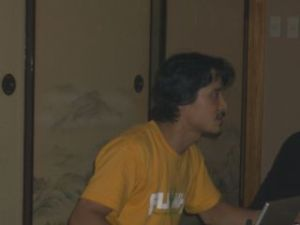
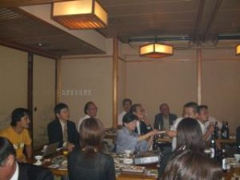
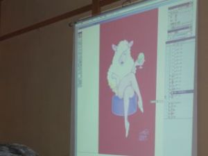

第２０回高高神田会寄合記
コンピュータを使ったイラストの描き方
平成１６年(2004)９月１６日、第２０回神田会「コンピュータを使ったイラストの描き方 」が開かれました。
講師は吉川純広さん（高高平成６年卒）。
吉川さんは、高高（美術部）卒業後、香川大学経済学部を卒業した後に、コンピュータ（マック）専門学校に通った異色イラストレータ。
吉川さんの作品はコンピュータを使ったイラストが中心で、人物のイラストを中心に独自の世界を表現しています。


